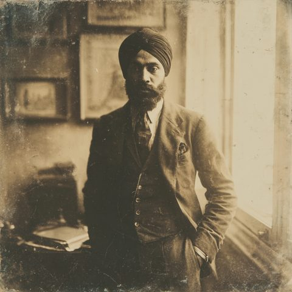

One player · four investigators · a Keeper who is not a person
Peking · the Silk Road · the roof of the world
In September of 1923 four people are drawn together in Peking under the seal of the university and the shadow of an American collector's expedition west. A paleobotanist and his radical wife. A Sikh soldier who has buried too much. A young missionary-nurse who sees things she calls the work of God. They do not yet know that something older than the Silk Road is counting them — that a cult of the Tokabhaya means to unlock gates that were shut for good reason. This is the archive of that journey: who they are, where they have gone, and the method by which the tale is told.

The four Peking investigators in full — characteristics, standing, and the web of love, respect and wariness that binds them. Each card opens onto a complete expedition dossier.
The chronicle, chapter by chapter — Peking's Nine Gates, the Wagons-Lits, and the long road toward Dunhuang — scene by scene, with every investigator and NPC present tagged, and the threads left hanging.
The campaign's second engine: a marriage with an arrangement, a slow-burning attraction disciplined into restraint, and a question the Mythos and the heart both ask — what is a gate for?
The method by which the campaign is played — one player, all four investigators, and Claude as Keeper. Prose style, the four cosmologies of sanity, mechanical adjudication, and the canon established in play.